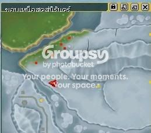
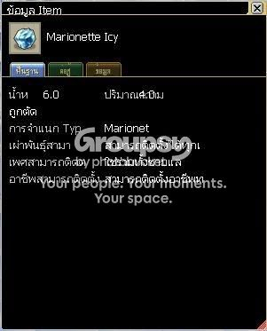
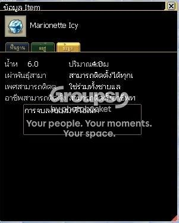

หน้า 2 จากทั้งหมด 18

โพสต์แล้ว:
เสาร์ 07 เม.ย. 2007 10:57 pmโดย ECO
มาเพิ่มเติมนิดหน่อยเผอิญไปเที่ยวมาเลยไม่ได้ใช้คอม
แก้ไขตรง mandragora กับ erecitel
mandragora คิดว่าถูกแล้ว
erecitel อันนี้ยังมีข้อสงสัยอยู่แต่ก็คิดว่าถูก
innsmouth เดี๋ยวจะมาแก้อีกที
Icy , homura , Nymph , pino , pivot คงต้องรอไปก่อนเพราะไม่รู้เรื่องอย่างรุนแรง
ถ้ามีอะไรผิดพลาดก็ช่วยบอกด้วย
โพสต์แล้ว:
เสาร์ 07 เม.ย. 2007 11:27 pmโดย ECO
มาเพิ่มเติมวิธีเอา Icy ให้
ให้เอา strange crystal (หรือชื่อื่นมะแน่ใจ แต่มีคำอธิบายว่าหินที่มีพลังประหลาด ผมได้จากกล่องมา)
ไปที่แมปเหนือสุดนิรันดร์ เข้าวาปที่ปกติจะเป็นทางตัน เราจะฝ่าทางตันไปได้
แล้วจะไปถึงหมู่บ้าน icy เอา crystal ไปให้หัวหน้าหมู่บ้านจะได้มาริโอเนทมาละ
โพสต์แล้ว:
เสาร์ 07 เม.ย. 2007 11:29 pmโดย ECO
ได้ตัวนี้มาแล้วจ้า

ได้จากตรงที่เราเดินไปในแมพนี้น่ะ

เดินลงไปจะเป็นแบบนี้
เอาคริสตัลที่ว่าไปให้ ก็จะสามารถเดินผ่านกำแพงที่มองไม่เห็นได้
คริสตัลเปิดกล่องได้หน้าเมืองเหนือ(ที่มีไซคลอป แพนกวิน ขนนกขาว กระต่ายบนลูกบอล เมจปูรุรุและหมาป่าขาวอ่ะค่ะ)
สังเกตง่ายๆว่าใช่คริสตัลอันนั้นรึเปล่าก็ลองอ่านข้อมูลดู
มันจะเขียนว่าเป็นกุญแจ...อะไรซักอย่าง
(พอดีตอนทำไม่ได้เซฟรูปไว้อ่ะค่ะ)
แล้วก็อย่างที่จขกท.บอก คือไปคุยกับไอซี่3ตัวก็ได้มาค่ะ
ก็จะได้เป็นแบบนี้
ไอค่อน

รายละเอียด



thx : LuNaCy คนทำตัวจิง
(akehaเป็นคนดูอยู่ข้าง+โดนสั่งให้มาโพส)
โพสต์แล้ว:
เสาร์ 07 เม.ย. 2007 11:34 pmโดย ECO
Nymph อยู่ตรงไหนหรอคับ
โพสต์แล้ว:
เสาร์ 07 เม.ย. 2007 11:35 pmโดย ECO
Nymph อยู่ตรงไหนหรอคับ
โพสต์แล้ว:
อาทิตย์ 08 เม.ย. 2007 12:14 pmโดย ECO
มาแก้ไขตรง homura กับ nymph แต่ก็ยังไม่ค่อยแน่ใจเท่าไหร่ ( ตามความเข้าใจของเราอะนะเวลาแปล )
ถ้ามีคนลองทำแล้วมาบอกจะขอขอบคุณอย่างสูง
โพสต์แล้ว:
อาทิตย์ 08 เม.ย. 2007 5:03 pmโดย ECO
Sevenstars เขียน:Nymph อยู่ตรงไหนหรอคับ
ในดันทางตะวันออกของเมืองฟาอีสครับ
พอไปหามันแล้ว มันบอกว่าให้ไปหาหนอนประหลาดมา
เลยไม่รุจะไปหามาจากไหน
ใครรุช่วยบอกที
โพสต์แล้ว:
อาทิตย์ 08 เม.ย. 2007 5:11 pmโดย ECO
หนอนประหลาดน่าจะหมายถึง Strange pupa ดรอปจาก Crawler ( หนอนสีเขียว ) Sand crawler ( หนอนสีน้ำตาล ) Caterpillar ( หนอนสีแดง ) แต่ในเว็บ
http://ec.gamedb.info/wiki/ บอกว่าต้องมีสกิล Insect knowledge ถึงจะดรอปอะ
โพสต์แล้ว:
อาทิตย์ 08 เม.ย. 2007 6:25 pmโดย ECO
ขอถามหน่อย
ในแพท Close beta สามารถไปที่ tower of light

ได้รึปล่าว
tower of light เข้าได้ทางเมือง city of mogu

เป็นเมืองทางตะวันตกบัตรผ่านซื้อได้ที่

การเอา Marionette Pino จำเป็นต้องไปที่ tower of light
โพสต์แล้ว:
จันทร์ 09 เม.ย. 2007 1:48 amโดย ECO
cloth of sewing involving <---ชิ้นนี้หาได้จากไหนหรอค่ะ เพราะเป็งชาวนาจาไปลยุน้องหมีก็ไม่ไหวอะค่ะ
โพสต์แล้ว:
จันทร์ 09 เม.ย. 2007 1:57 amโดย ECO
abyssal เขียน:หนอนประหลาดน่าจะหมายถึง Strange pupa ดรอปจาก Crawler ( หนอนสีเขียว ) Sand crawler ( หนอนสีน้ำตาล ) Caterpillar ( หนอนสีแดง ) แต่ในเว็บ
http://ec.gamedb.info/wiki/ บอกว่าต้องมีสกิล Insect knowledge ถึงจะดรอปอะ
ขอบคุณงับ
แต่ต้องใช้สกิลถึงดรอปหรอ
เป็นพ่อค้ก็อดจินี่ T_T
โพสต์แล้ว:
จันทร์ 09 เม.ย. 2007 11:13 amโดย ECO
กลายเป็นว่าดูไปดูมา Marionette Pino มันเป็น event ของญี่ปุ่นอะ (ถ้าเราดูไม่ผิดนะ) โดยต้องไปรับเควส (ต้องมีเลเวล 50 ขิ้นไปกับต้องค่าชื่อเสียงเพียงพอ)จาก NPC Emil ในห้องของ Marionette Master ( แค่นี้ก็คงไม่มีแล้วมั้ง -_- )
แล้ว Marionette ที่สามรถดรอปจากมอนส์เตอร์ได้ ( Salamander , Innsmouse , Mandragora , Elecitel , Tiny , Beryl ) ต้องมีสกิล knowledge ของประเภทมอนส์เตอร์นั้นด้วย
โพสต์แล้ว:
จันทร์ 09 เม.ย. 2007 1:41 pmโดย ECO
ตอนนี้คิดว่าน่าจะถูกต้องหมดแล้วถ้ามีอะไรผิดพลาดก็ช่วยแจ้งด้วยนะครับ
โพสต์แล้ว:
อังคาร 10 เม.ย. 2007 1:29 amโดย ECO
เข้าไปดันตะวันออกชั้น5 จะไปเข้าหมู่บ้านเอาปลาไปแลกสำลักน้ำตายซะงั้น
หาหมู่บ้านไม่เจอ รึมานต้องมีวิธีเข้าวานผู้รู้ชี้แจงด้วยครับ เพราะเดินไปตรงจุดเหลืองๆชั้น5แล้วมีแต่ป้ายคุยแล้วไม่มีรัยเกิดขึ้น :cry:
โพสต์แล้ว:
อังคาร 10 เม.ย. 2007 2:13 amโดย ECO
nokhaew เขียน:Sevenstars เขียน:Nymph อยู่ตรงไหนหรอคับ
ในดันทางตะวันออกของเมืองฟาอีสครับ
พอไปหามันแล้ว มันบอกว่าให้ไปหาหนอนประหลาดมา
เลยไม่รุจะไปหามาจากไหน
ใครรุช่วยบอกที
ไปหายังไงอ่ะครับ
ผมขอ jade จากหมามา แล้ว ประตูมันก็ยังเข้าไม่ได้
หรือว่า ต้องมีสร้อย Jade *o*